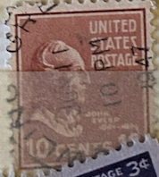
| SOURCE | TITLE| IMAGE MATCH | click to source page |
| eBay | United States Postage Stamp ~ John Tyler ~ 10₵ Orange ~ Posted ~ 1938 ~ E33 | eBay |  |
| Mercari | Vintage 10 cent stamp ( j7 )h USPS | Mercari | 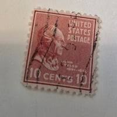 |
| eBay | United States Postage Stamp ~ John Tyler ~ 10₵ Orange ~ Posted ~ c.1938 - 33 | eBay | 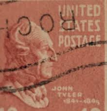 |
| Alamy | USA - CIRCA 1932: A stamp printed in USA shows image portrait George Washington (1732–1799), was the first president of the United States (1789–1797 Stock Photo - Alamy | 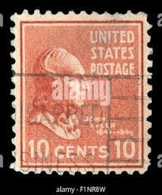 |
| eBay UK | US STAMP 1939 10c John Tyler. Presidential Series. | eBay UK | 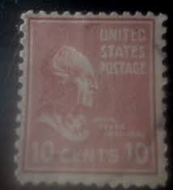 |
| eBay Australia | USA - 1938 - Presidential Issue - John Tyler - 10C - #23 | eBay Australia | 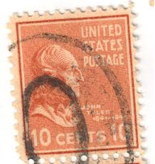 |
| Latinafy | United States Postage John Adams 2 Cent 1939 | 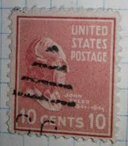 |
| Alamy | 1937 stamp hi-res stock photography and images - Alamy | 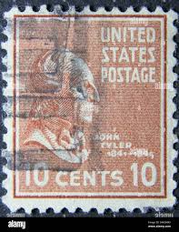 |
| Mystic Stamp | 829 - 1938 25c William McKinley, Deep Red Violet - Mystic Stamp Company | 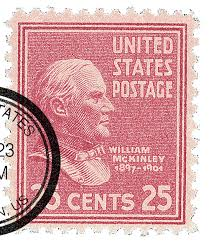 |
| eBay | Brown Used Used US Stamps (1901-Now) for sale | eBay | 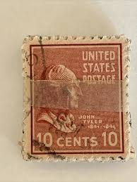 |
| Dreamstime.com | America vintage post stamp editorial image. Image of america - 411129155 | 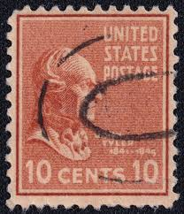 |
| VeVe Collectibles | USPS — Stamp Art — Presidential Series (1938) Series 2 - VeVe Digital Collectibles | 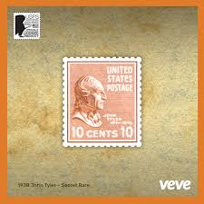 |
| PicClick UK | U.S. 10 CENTS John Tyler Stamp 1938, Scott 815 £2.06 - PicClick UK | 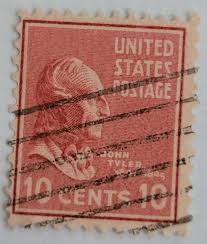 |
| HipStamp | 815 10 cent John Tyler Stamp used F | United States, General Issue Stamp / HipStamp | 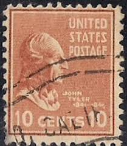 |
| eBay | Adams A9 | eBay | 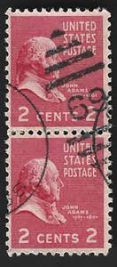 |
| eBay | 2 Cent Us Postage Stamp In Used Us Stamps (1901-Now) for sale | eBay | 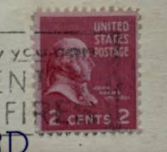 |
| HipStamp | 815 10 cent John Tyler Stamp used F | United States, General Issue Stamp / HipStamp | 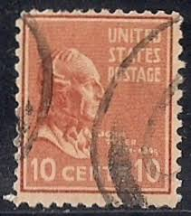 |
| ebid.net | US Stamp #1208 used: 1963 5c Flag over White House [1] on eBid United States | 142084856 | 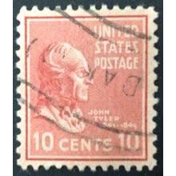 |
| eBay | United States Numeral Cancellation 10 Cent Denomination Stamps for sale | eBay | 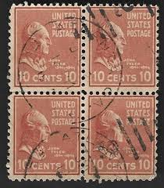 |
| eBay | 2-1938 John Taylor 10 Cent Stamps | eBay | 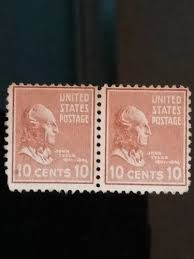 |
| eBay | United States Postage Stamp ~ John Tyler ~ 10₵ Orange ~ Posted ~ c.1938 - 35 | eBay | 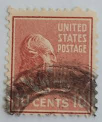 |
| eBay | 1938 Martha Washington #805 1 1/2 cent, mini town, state & date cancel, unusual | eBay | 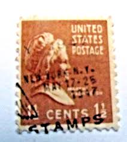 |
| Shutterstock | 5+ Hundred 10 Cent Stamp Royalty-Free Images, Stock Photos & Pictures | Shutterstock | 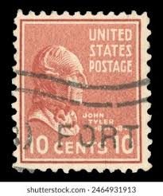 |
| eBay | West Coast Stamp Company | eBay Stores | 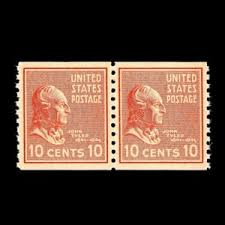 |
| eBay | United States Postage Stamp ~ John Tyler ~ 10₵ Orange ~ Posted ~ 1938 ~ E03 | eBay | 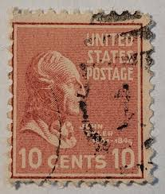 |
| Mercari | S.t.a.m.p.s. 3 Cent Make-Up Rate Vintage Stamps | Mercari | 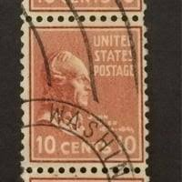 |
| eBay | United States Postage Stamp ~ John Tyler ~ 10₵ Orange ~ Posted ~ 1938 ~ E18 | eBay |  |
| eBay | United States Postage Stamp ~ John Tyler ~ 10₵ Orange ~ Posted ~ 1938 ~ E35 | eBay |  |
| eBay | United States Postage Stamp ~ John Tyler ~ 10₵ Orange ~ Posted ~ 1938 ~ E09 | eBay |  |
| saltanindustries.com | Postage Stamps | 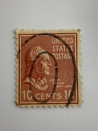 |
| Todocolección | sello united states stamp. john tyler 10 cent. - Buy Antique stamps of United States on todocoleccion |  |
| eBay | Presidential Series 1938 John Tyler 10 cents #816 used | eBay | 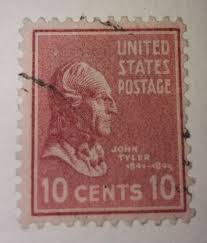 |
| eBay | US Stamp John Tyler 10c Used | eBay |  |
| Shutterstock | 3+ Hundred John Tyler Royalty-Free Images, Stock Photos & Pictures | Shutterstock | 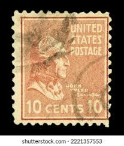 |
| eBay | Scott#? US Stamp 1938 10c John Tyler Used Prexie - #G475 | eBay | 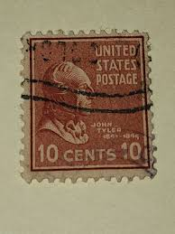 |
| eBay | Scott#? US Stamp 1938 10c John Tyler Used Prexie - #5790 | eBay | 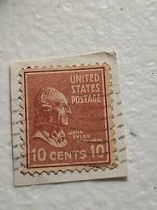 |
| eBay | USA - 1938 - Presidential Issue - John Tyler - 10C - #19 | eBay | 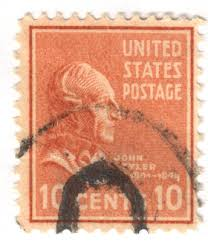 |
| ebid.net | CANADA, Prince's Gate, National Exhibition, black 1978, 14c, #2 on eBid United States | 206882869 | 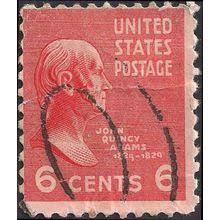 |
| eBay | United States Postage Stamp ~ John Tyler ~ 10₵ Orange ~ Posted ~ 1938 ~ E31 | eBay |  |
| the10cprexiecoil.com | Stamp Production – The 10c Coil Stamp From the Presidential Series of 1938 | 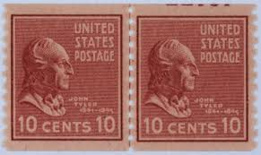 |
| eBay | United States Postage Stamp ~ John Tyler ~ 10₵ Orange ~ Posted ~ c.1938 - 38 | eBay | 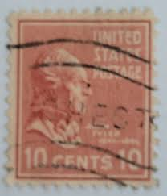 |
| eBay | United States Postage Stamp ~ John Quincy Adams ~ 6₵ Red ~ Posted ~ c.1938 - 14 | eBay | 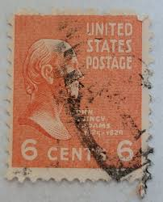 |
| eBay | United States Postage Stamp ~ John Tyler ~ 10₵ Orange ~ Posted ~ c.1938 - 33 | eBay |  |
| eBay | STAMPS US SCOTT 815 "Tyler"10 CENT 1938 MNH | eBay | 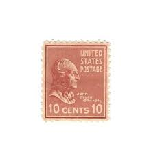 |
| usa stamps from 2006 and 2008 | 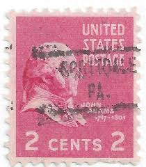 | |
| eBay | Scott # 815 - John Tyler - Single Stamp - MNH - 1938 | eBay | 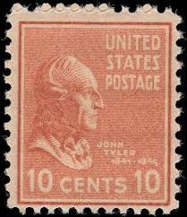 |
| eBay | US 10 Cent John Tyler Postage Stamp 1938, Scott #815 VF US115 | eBay | 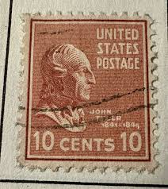 |
| PicClick | JOHN QUINCY ADAMS / Bank of the United States April 30 1832 Committed $30.00 - PicClick | 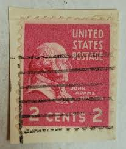 |
| Mercari | 1942-43 Nations United For Victory 2 Cent | Mercari | 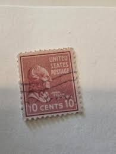 |
| eBay | United States Postage Stamp ~ John Tyler ~ 10₵ Orange ~ Posted ~ c.1938 - 07 | eBay | 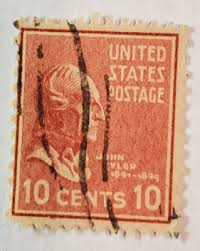 |
| eBay | United States Postage Stamp ~ John Tyler ~ 10₵ Orange ~ Posted ~ 1938 ~ E58 | eBay | 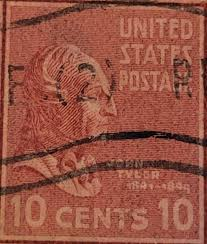 |
| Etsy | John Tyler Stamp - Etsy | 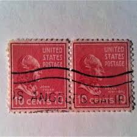 |
| eBay | US 10 Cent John Tyler Postage Stamp 1938, Scott #815 A5 | eBay | 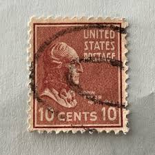 |
| eBay | Scott 847 Used Premium Example PSE Graded XF-S 95 | eBay | 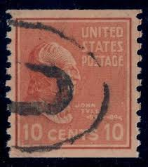 |
| eBay | United States Postage Stamp ~ John Quincy Adams ~ 2₵ Red ~ Posted ~ c.1938 - A04 | eBay | 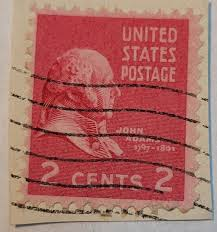 |
| eBay | STAMPS US SCOTT 815 "Tyler"10 CENT 1938 USED | eBay | 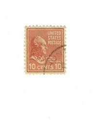 |
| eBay | United States Postage Stamp ~ John Tyler ~ 10₵ Orange ~ Posted ~ 1938 ~ E54 | eBay | 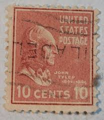 |
| Mercari | 1947 Postage Stamp Centenary 3 cent stamp | Mercari | |
| eBay | US 1938 Scott #815 Block of 6 MNH OG 10 Cent Tyler Presidential Series | eBay | |
| eBay | U.S. Postage Stamp ~ William McKinley ~ 1897-1901 ~ 25¢ Red Stamp ~ J14 | eBay |